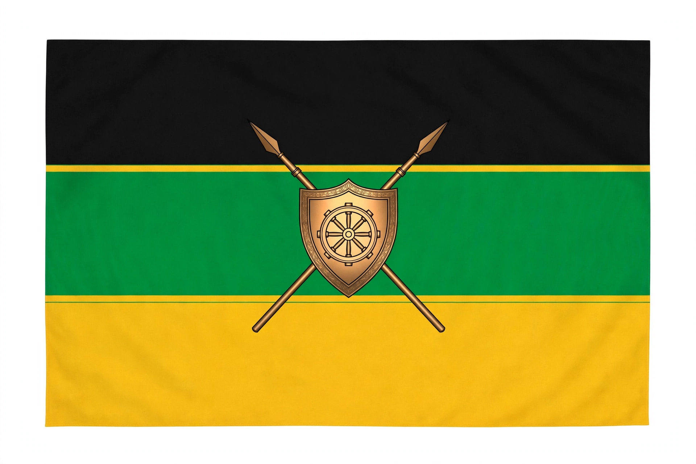

| African National Congress | |
|---|---|
 | |
| Founded | 8 January 1912, Bloemfontein |
| Headquarters | Luthuli House, Johannesburg |
| Ideology | African nationalism; social democracy |
| Armed wing | uMkhonto weSizwe (1961–1993) |
The African National Congress (ANC) is a political party in South Africa, founded in 1912 as the South African Native National Congress. It led the struggle against apartheid and has governed South Africa in an alliance with the trade union federation COSATU and the South African Communist Party since the first democratic elections in 1994.
The ANC was founded in Bloemfontein in 1912 to defend the rights of black South Africans. Its early decades were dominated by petitions and deputations; after the National Party's 1948 victory and the imposition of apartheid, the ANC adopted mass action, joining the Congress Alliance behind the Freedom Charter of 1955. Following the Sharpeville massacre of 1960, the organisation was banned and turned to armed struggle, founding uMkhonto weSizwe in 1961 with Nelson Mandela among its leaders. Mandela and other leaders were imprisoned after the Rivonia Trial (1963–64), while Oliver Tambo led the movement in exile.
Unbanned in 1990, the ANC negotiated the transition to democracy, and Mandela became president after the 1994 election. Successive ANC governments under Thabo Mbeki, Jacob Zuma and Cyril Ramaphosa have contended with inequality, unemployment and corruption, including the state-capture scandals of the Zuma era. In the 2024 general election the ANC lost its parliamentary majority for the first time, falling to about 40 percent of the vote, and formed a government of national unity with other parties including the Democratic Alliance.
Liberal Democratic Party (Japan) · People's Action Party · Giovanni Sartori